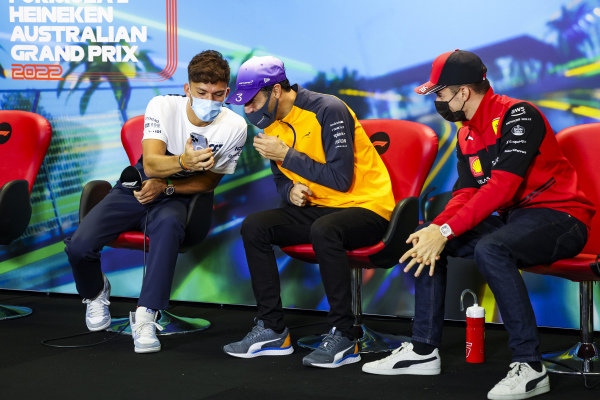

-
Uitslag 2023
P1. Max Verstappen - Red Bull Racing
P2. Sergio Perez - Red Bull Racing
P3. Carlos Sainz - Scuderia Ferrari -
WINNAARS VAN DE GP VAN ITALIE
- Max Verstappen - 2023
- Max Verstappen - 2022
- Daniel Ricciardo - 2021
- Pierre Gasly - 2020
- Charles Leclerc - 2019
-
CIRCUIT EN INFORMATIE
Het Monza Circuit ook wel geniemd Autodromo Nazionale di Monza ligt naast de stad Monza in Italie. Het is geopend in 1922 en daarmee ook een van de oudste circuit op de kalender.
Het circuit heeft 11 bochten en is daarmee gemiddeld lang. Monza behoort ook tot een van de bekendste Europese circuits. Alle soorten kampioenschappen rijden op het Monza Circuit. Het unieke aan Monza is dat de Formule 1 bolides in 80% van de ronde volgas gaan. Hun topsnelheid loopt op tot 372km/u, wat je nergens anders gaat kunnen zien dan op het Monza Circuit.Als je de GP van Italië live wilt gaan zien in 2024 heb je altijd een voordeel. Italië is de thuisrace voor het team van Ferrari. Er zijn duizende Ferrari fans die echte passie hebben voor de sport. Je kan niet tussen betere fans zitten dan de tifosi. Het circuit heeft geen hoogteverschillen waardoor je veel zicht heb dan bij andere circuit op de kalender. Als je op de hoofdtribune van start/finish zit kan je alles vanaf de laatste bocht tot aan achterin bocht 2. Dat is enorm veel zicht voor op circuit.
De prijzen om de Formule 1 live te zien in Italië starten vanaf €194,00 euro voor een heel weekend en eindigen op €1532,00 euro. Monza is de ideaale locatie om de Formule 1 live te zien. Je hebt hele goede tickets voor een heel weekend voor een goedkopen prijs. Je zit tussen de Ferrari fans wat een enorme sfeer geeft aan het circuit tijdens het weekend van de Grand Prix van Italië. Je komt het beste naar het circuit vanaf het centraal station van de stad Monza. Er gaan daar tijdens het weekend shuttle bussen naar het circuit. Lopend is niet echt aan te raden vanaf het station in Monza. Het is ook mogelijk om met de auto te komen. Het ligt één uur rijden van de stad Milaan. Met de italiaanse cultuur daarbij zal het altijd goed moeten komen om af te reizen naar het circuit om de Formule 1 live te kijken!